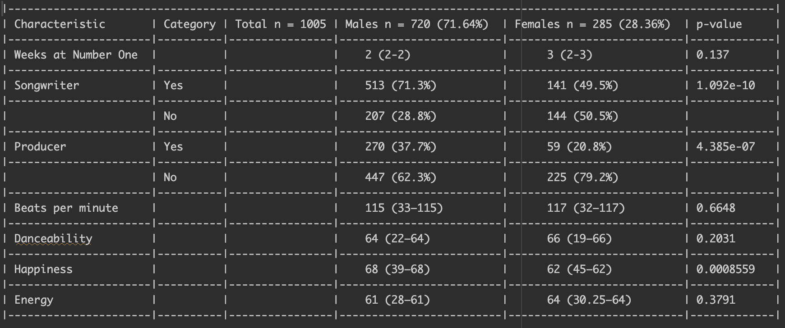
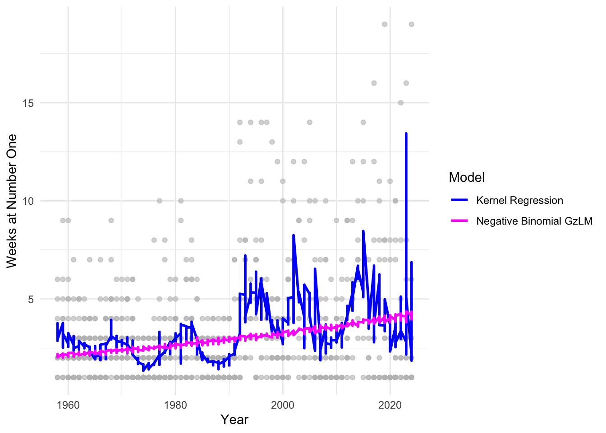
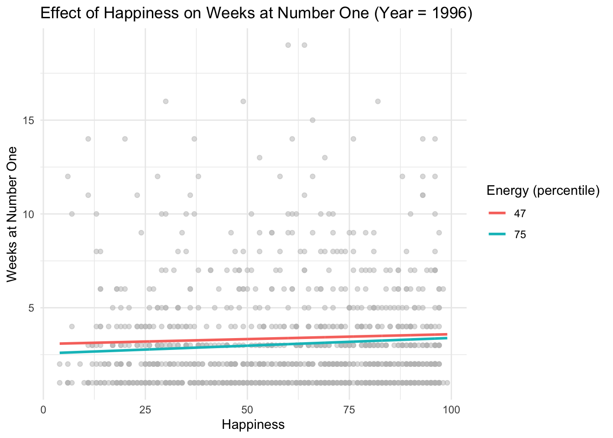

What is kernel regression? Kernel regression is a nonparametric regression method. It is used to estimate the nonparametric regression function \(f\) using weighted averages of the data in question. The nonparametric regression model can be defined by:
\[
y_i = f(x_i) + \varepsilon_i \text{ , } a < x_1 < ... < x_n < b
\] where \(f \in C^2 [a,b]\) is an unknown smooth function and is unspecified by the modeler (meaning the shape of the curve is determined by the data). The weights for each observation \(y_j\) for predicting at \(x_i\) is:
\[
w_{ij} = \frac{K(\frac{x_i-x_j}{h})}{\sum_{j=1}^{n}K(\frac{x_i-x_j}{h})} = \frac{K(u)}{\sum_{j=1}^{n}K(u)}
\] where \(K(u)\) is a decreasing function of \(u\) and \(h>0\) is the bandwidth or smoothing parameter. \(K(u)\) is the kernel function, also known as the Gaussian probability density function. The kernel function is typically nonnegative, continuous, twice differentiable, and symmetric about the origin (0), but there are other ways it can be chosen/represented.
How is kernel regression different from our usual G(z)LM methods? Kernel regression is different from our usual G(z)LM methods in the sense that it is nonparametric - meaning it does not assume any particular underlying distribution shape. G(z)LM methods are parametric, like Poisson, linear, logistic, etc. Kernel regression does not estimate \(\beta\)s, while our usual methods do. The shape of the associated function f(x) is entirely determined by the data in nonparametric regression, while for parametric G(z)LMs we assume a specific model function/form.
What type of outcome(s) is it appropriate for? Kernel regression is appropriate for continuous outcomes.
Are there alternatives to kernel regression? Yes, there are many alternatives to kernel regression. The most prominent one that I was able to find was smoothing spline regression, which estimates the same nonparametric regression model by minimizing the penalized residual sum of squares. Other alternatives of kernel regression include: k-nearest neighbor regression, generalized additive models (GAMs), and locally weighted scatterplot smoothing (LOWESS).
How do we assess model fit?
What is the AIC? The AIC is used to compare a set of potential statistical models. It balances goodness of fit (via the maximized likelihood) against model complexity (the number of parameters), penalizing overly complex models to avoid overfitting. The model with the lowest AIC is considered to have the best trade-off between fit and simplicity, meaning it is the best approximating model among those considered.
What is the AICc? The AICc is a small-sample correction to AIC. When sample size is limited (relative to the number of parameters), AIC may tend to favor overly complex models. AICc adds an additional penalty for model complexity that depends on sample size, and therefore reduces that bias. For small n (or “medium” sized n), AICc is preferred over AIC. AICc should be used by default unless n is very large.
How do we determine the better fitting model using the AICc? We determine the better fitting model using the AICc by first fitting all models onto the same dataset. Next, compute the AICc for each model in the dataset. The model with the lowest AICc is the best model. Next, compute: \[
\bigtriangleup \text{AIC}_c = \text{AIC}_{c_i} - \text{AIC}_{c_{min}}
\] This value will tell us how much worse each model is when compared to the best model (the model with the lowest AICc). Models that have a \(\bigtriangleup \text{AIC}_c\) of around 0-2 have strong support, meaning they are likely to be very close to the best model. These values are worth interpreting. Models with \(\bigtriangleup \text{AIC}_c\) values of around 4-7 have less support and fit the data noticeably worse when compared to the best model. Models with \(\bigtriangleup \text{AIC}_c\) values greater than 10 have little to no support and are very far from the best model. Optionally, we could also calculate the Akaike weights. These weights transform \(\bigtriangleup \text{AIC}_c\) into probabilities that each model is the best among the set of models, which would allow us to perform model averaging.
References
Burnham, K. P., & Anderson, D. R. (2004). Multimodel inference: Understanding AIC and BIC in model selection. Sociological Methods & Research, 33(2), 261–304. https://doi.org/10.1177/0049124104268644
Aydin, D. (2007). A comparison of the nonparametric regression models using smoothing spline and kernel regression. World Academy of Science, Engineering and Technology, 36, 255–260.
Part 2 (Applied):
Data: https://github.com/rfordatascience/tidytuesday/blob/main/data/2025/2025-08-26/readme.md Data Dictionary: Billboard Hot 100 Number Ones Database
library(tidyverse)
── Attaching core tidyverse packages ──────────────────────── tidyverse 2.0.0 ──
✔ dplyr 1.1.4 ✔ readr 2.1.5
✔ forcats 1.0.0 ✔ stringr 1.5.1
✔ ggplot2 3.5.2 ✔ tibble 3.2.1
✔ lubridate 1.9.4 ✔ tidyr 1.3.1
✔ purrr 1.0.2
── Conflicts ────────────────────────────────────────── tidyverse_conflicts() ──
✖ dplyr::filter() masks stats::filter()
✖ dplyr::lag() masks stats::lag()
ℹ Use the conflicted package (<http://conflicted.r-lib.org/>) to force all conflicts to become errors
billboard <-read_csv('https://raw.githubusercontent.com/rfordatascience/tidytuesday/main/data/2025/2025-08-26/billboard.csv')
Rows: 1177 Columns: 105
── Column specification ────────────────────────────────────────────────────────
Delimiter: ","
chr (26): song, artist, label, parent_label, cdr_genre, cdr_style, discogs_...
dbl (78): weeks_at_number_one, non_consecutive, rating_1, rating_2, rating_...
dttm (1): date
ℹ Use `spec()` to retrieve the full column specification for this data.
ℹ Specify the column types or set `show_col_types = FALSE` to quiet this message.
billboard <- billboard %>%mutate(sex =factor(artist_male, levels =c(1,0), labels =c("Male","Female")),date =as.Date(date),year = lubridate::year(date))
Let’s create a Table 1, split on sex.
For categorical variables, you are reporting n (col %)
For continuous variables, you are reporting median (IQR)
In the header, you should fill in the sample sizes and for the sexes, the percent of each sex in the overall sample size.
For the p-value, use the appropriate nonparametric test(s) to compare males and females.
# column totals and percentagestable(billboard$sex)
Male Female
720 285
#weeks at number 1 (weeks_at_number_one)median(billboard$weeks_at_number_one[billboard$sex =="Male"], na.rm=TRUE)
Wilcoxon rank sum test with continuity correction
data: weeks_at_number_one by sex
W = 96641, p-value = 0.137
alternative hypothesis: true location shift is not equal to 0
Wilcoxon rank sum test with continuity correction
data: bpm by sex
W = 100307, p-value = 0.6648
alternative hypothesis: true location shift is not equal to 0
Wilcoxon rank sum test with continuity correction
data: danceability by sex
W = 96838, p-value = 0.2031
alternative hypothesis: true location shift is not equal to 0
Wilcoxon rank sum test with continuity correction
data: happiness by sex
W = 115878, p-value = 0.0008559
alternative hypothesis: true location shift is not equal to 0
Wilcoxon rank sum test with continuity correction
data: energy by sex
W = 98462, p-value = 0.3791
alternative hypothesis: true location shift is not equal to 0

Table 1
Danceability or beats per minute?
Model weeks at number one as a function of danceability, sex, and year. i. Create a model summary appropriate for a professional setting (i.e., table form). (See if we can use tidy()?) ii. What is the AICc? -> The AICc for this model is 1811.453.
library(np)
Nonparametric Kernel Methods for Mixed Datatypes (version 0.60-18)
[vignette("np_faq",package="np") provides answers to frequently asked questions]
[vignette("np",package="np") an overview]
[vignette("entropy_np",package="np") an overview of entropy-based methods]
Multistart 1 of 3 |
Multistart 1 of 3 |
Multistart 1 of 3 |
Multistart 1 of 3 /
Multistart 1 of 3 -
Multistart 1 of 3 \
Multistart 1 of 3 |
Multistart 1 of 3 |
Multistart 2 of 3 |
Multistart 2 of 3 |
Multistart 2 of 3 /
Multistart 2 of 3 -
Multistart 2 of 3 \
Multistart 2 of 3 |
Multistart 2 of 3 |
Multistart 3 of 3 |
Multistart 3 of 3 |
Multistart 3 of 3 /
Multistart 3 of 3 -
Multistart 3 of 3 \
Multistart 3 of 3 |
Multistart 3 of 3 |
# Fit kernel regressionm1 <-npreg(bws = bw)summary(m1)
# Compute pseudo-AIC approximationn <-nrow(billboard)RSS <-sum(residuals(m1)^2)edf <-sum(m1$eff.df) # effective degrees of freedompseudo_AIC <- n *log(RSS/n) +2* edfpseudo_AIC
[1] 1811.451
Model weeks at number one as a function of beats per minute, sex, and year. i. Create a model summary appropriate for a professional setting (i.e., table form). (See if we can use tidy()?) ii. What is the AICc? -> The AICc for this model is 1593.264 (less than model 1).
Multistart 1 of 3 |
Multistart 1 of 3 |
Multistart 1 of 3 |
Multistart 1 of 3 /
Multistart 1 of 3 -
Multistart 1 of 3 \
Multistart 1 of 3 |
Multistart 1 of 3 |
Multistart 1 of 3 |
Multistart 2 of 3 |
Multistart 2 of 3 |
Multistart 2 of 3 /
Multistart 2 of 3 -
Multistart 2 of 3 |
Multistart 2 of 3 |
Multistart 3 of 3 |
Multistart 3 of 3 |
Multistart 3 of 3 /
Multistart 3 of 3 -
Multistart 3 of 3 \
Multistart 3 of 3 |
Multistart 3 of 3 |
Multistart 3 of 3 |
# Fit kernel regressionm2 <-npreg(bws = bw)summary(m2)
# Compute pseudo-AIC approximationn <-nrow(billboard)RSS <-sum(residuals(m2)^2)edf <-sum(m2$eff.df) # effective degrees of freedompseudo_AIC <- n *log(RSS/n) +2* edfpseudo_AIC
[1] 1593.263
Compare the AICc values from parts a and b. Which model fits the data better? Why? Part a model’s AICc value was 4121.313, and part b model’s AICc was 4120.853. Part b/model 2 fits the data better because it has a lower AICc. Although the difference is slight, the lower AICc value indicates that model 2 has a better trade off between complexity and model fit. Both models are realtively similar in explanatory power (difference is so slight) but model 2 is still technically preferred.
Construct the appropriate GzLM for the model specification that fit best (either a or b). i. Create a model summary appropriate for a professional setting. Please take advantage of the tidy() function.
# use nb regression on model 2 (part b's model)m3 <- MASS::glm.nb(weeks_at_number_one ~ bpm + sex + year,data = billboard)summary(m3)
Call:
MASS::glm.nb(formula = weeks_at_number_one ~ bpm + sex + year,
data = billboard, init.theta = 3.949478724, link = log)
Coefficients:
Estimate Std. Error z value Pr(>|z|)
(Intercept) -1.974e+01 2.648e+00 -7.453 9.12e-14 ***
bpm -9.764e-04 1.000e-03 -0.976 0.329
sexFemale -9.718e-03 5.498e-02 -0.177 0.860
year 1.052e-02 1.335e-03 7.877 3.35e-15 ***
---
Signif. codes: 0 '***' 0.001 '**' 0.01 '*' 0.05 '.' 0.1 ' ' 1
(Dispersion parameter for Negative Binomial(3.9495) family taken to be 1)
Null deviance: 952.11 on 1002 degrees of freedom
Residual deviance: 886.89 on 999 degrees of freedom
(174 observations deleted due to missingness)
AIC: 4120.8
Number of Fisher Scoring iterations: 1
Theta: 3.949
Std. Err.: 0.379
2 x log-likelihood: -4110.793
library(broom)tidy(m3, conf.int =TRUE) %>%mutate(across(where(is.numeric), round, 4)) %>% knitr::kable(caption ="Model 3: Weeks at Number One ~ Beats per min + Sex + Year")
Warning: There was 1 warning in `mutate()`.
ℹ In argument: `across(where(is.numeric), round, 4)`.
Caused by warning:
! The `...` argument of `across()` is deprecated as of dplyr 1.1.0.
Supply arguments directly to `.fns` through an anonymous function instead.
# Previously
across(a:b, mean, na.rm = TRUE)
# Now
across(a:b, \(x) mean(x, na.rm = TRUE))
Warning in attr(x, "align"): 'xfun::attr()' is deprecated.
Use 'xfun::attr2()' instead.
See help("Deprecated")
Warning in attr(x, "format"): 'xfun::attr()' is deprecated.
Use 'xfun::attr2()' instead.
See help("Deprecated")
Model 3: Weeks at Number One ~ Beats per min + Sex + Year
term
estimate
std.error
statistic
p.value
conf.low
conf.high
(Intercept)
-19.7353
2.6479
-7.4531
0.0000
-24.8880
-14.5952
bpm
-0.0010
0.0010
-0.9763
0.3289
-0.0029
0.0009
sexFemale
-0.0097
0.0550
-0.1767
0.8597
-0.1175
0.0978
year
0.0105
0.0013
7.8773
0.0000
0.0079
0.0131
Construct the following data visualization: i. A scatterplot with number of weeks on the y axis and year on the x-axis. ii. An overlaid line for the kernel regression model (either a or b) that fits the data best (i.e., your chosen model in c). iii. An overlaid line for the GzLM (i.e., the model from d).
library(ggplot2)billboard_cc <-na.omit(billboard[, c("weeks_at_number_one", "bpm", "sex", "year")])billboard_cc$kernel_fit <-fitted(m2)billboard_cc$glm_fit <-predict(m3, newdata = billboard_cc, type ="response")ggplot(billboard_cc, aes(x = year, y = weeks_at_number_one)) +geom_point(alpha =0.6, color ="grey") +geom_line(aes(y = kernel_fit, color ="Kernel Regression"), size =1) +geom_line(aes(y = glm_fit, color ="Negative Binomial GzLM"), size =1) +scale_color_manual(values =c("Kernel Regression"="blue", "Negative Binomial GzLM"="magenta")) +theme_minimal() +labs(x ="Year", y ="Weeks at Number One", color ="Model")
Warning: Using `size` aesthetic for lines was deprecated in ggplot2 3.4.0.
ℹ Please use `linewidth` instead.

Write a very brief summary of your final model. What models did you consider? Which model fit better and why? Of that model, what do the slopes mean in context? What does the y-intercept mean? Are there significant predictors? What can we help the reader understand with the graph? (i.e., can we drive home statements based on numbers – a slope of 5 is stronger than a slope of 0.6, e.g., & will show on the graph).
Models considered: I compared a nonparametric kernel regression model and a negative binomial generalized linear model (GzLM). With the kernel regression model, we are able to see the nonlinear patterns in the data more. With the NB model, we are able to better interpret coefficients and analyze our data from it.
Model fit: Based on the pseudo-AIC calculated and interpretability of the model, the NB model fit better. It accounted for the overdispersion in the count outcome (weeks_at_number_one) and provided clear parameter estimates with confidence intervals.
Slope interpretations: In general, each slope represents the expected change in weeks_at_number_one for a one-unit increase in the predictor, holding other variables constant. More specifically,
Intercept meaning: The y-intercept represents the expected count of weeks_at_number_one when all predictors are at their baseline (e.g., year = 0, bpm = 0, sex = reference category).
Significant predictors: The NB model showed that year is a significant predictor of bpm (beats per min). All other variables were not significant predictors of bpm.
Graph interpretation: The scatterplot with overlaid lines helps us see both the raw data and the fitted trends. The kernel regression line shows the flexible shape of the relationship, while the GzLM line highlights the more parametric trend. We can see that the kernel regression line has some steeper slopes (higher slopes) and more variability in the model, while the NB line stays pretty constant and increasing (low slopes - low variability).
Happiness or energy? Model weeks at number one as a function of happiness, energy, the interaction between the two, and year.
Create a model summary appropriate for a professional setting (i.e., table form). (See if we can use tidy()?)
m4 <-glm(weeks_at_number_one ~ happiness + energy + happiness:energy + year,data = billboard)tidy(m4, conf.int =TRUE) %>%mutate(across(where(is.numeric), round, 4)) %>% knitr::kable(caption ="Model 4: Weeks at Number One ~ Happiness + Energy + Happiness:Energy + Year")
Warning in attr(x, "align"): 'xfun::attr()' is deprecated.
Use 'xfun::attr2()' instead.
See help("Deprecated")
Warning in attr(x, "format"): 'xfun::attr()' is deprecated.
Use 'xfun::attr2()' instead.
See help("Deprecated")
Model 4: Weeks at Number One ~ Happiness + Energy + Happiness:Energy + Year
term
estimate
std.error
statistic
p.value
conf.low
conf.high
(Intercept)
-70.5776
8.8469
-7.9777
0.0000
-87.9172
-53.2379
happiness
0.0001
0.0098
0.0131
0.9895
-0.0191
0.0194
energy
-0.0180
0.0108
-1.6628
0.0966
-0.0392
0.0032
year
0.0373
0.0045
8.3278
0.0000
0.0285
0.0461
happiness:energy
0.0001
0.0002
0.6649
0.5062
-0.0002
0.0004
summary(m4)
Call:
glm(formula = weeks_at_number_one ~ happiness + energy + happiness:energy +
year, data = billboard)
Coefficients:
Estimate Std. Error t value Pr(>|t|)
(Intercept) -7.058e+01 8.847e+00 -7.978 3.53e-15 ***
happiness 1.291e-04 9.823e-03 0.013 0.9895
energy -1.798e-02 1.081e-02 -1.663 0.0966 .
year 3.732e-02 4.481e-03 8.328 2.28e-16 ***
happiness:energy 1.084e-04 1.631e-04 0.665 0.5062
---
Signif. codes: 0 '***' 0.001 '**' 0.01 '*' 0.05 '.' 0.1 ' ' 1
(Dispersion parameter for gaussian family taken to be 6.61561)
Null deviance: 8210.9 on 1174 degrees of freedom
Residual deviance: 7740.3 on 1170 degrees of freedom
(2 observations deleted due to missingness)
AIC: 5561.6
Number of Fisher Scoring iterations: 2
Is the interaction significant? NO. p-value > 0.05 for the interaction. i. If yes: construct a graph to help visualize the relationship.
Pick either happiness or energy to be on the x-axis.
Plug in for a single year (let’s do 1996 - a great year for music) & a couple of values for the variable not on the x-axis. (e.g., maybe the 25th percentile & 75th percentiles?) By graphing multiple lines it will demonstrate what the interaction means.
If no: reconstruct the model without the interaction.
Create a model summary appropriate for a professional setting (i.e., table form). (See if we can use tidy()?)
m5 <-glm(weeks_at_number_one ~ happiness + energy + year,data = billboard)tidy(m5, conf.int =TRUE) %>%mutate(across(where(is.numeric), round, 4)) %>% knitr::kable(caption ="Model 5: Weeks at Number One ~ Happiness + Energy + Year")
Warning in attr(x, "align"): 'xfun::attr()' is deprecated.
Use 'xfun::attr2()' instead.
See help("Deprecated")
Warning in attr(x, "format"): 'xfun::attr()' is deprecated.
Use 'xfun::attr2()' instead.
See help("Deprecated")
Model 5: Weeks at Number One ~ Happiness + Energy + Year
term
estimate
std.error
statistic
p.value
conf.low
conf.high
(Intercept)
-70.3292
8.8369
-7.9586
0.0000
-87.6492
-53.0091
happiness
0.0062
0.0036
1.7111
0.0873
-0.0009
0.0133
energy
-0.0115
0.0047
-2.4438
0.0147
-0.0207
-0.0023
year
0.0370
0.0045
8.3047
0.0000
0.0283
0.0458
summary(m5)
Call:
glm(formula = weeks_at_number_one ~ happiness + energy + year,
data = billboard)
Coefficients:
Estimate Std. Error t value Pr(>|t|)
(Intercept) -70.329178 8.836912 -7.959 4.08e-15 ***
happiness 0.006200 0.003623 1.711 0.0873 .
energy -0.011507 0.004708 -2.444 0.0147 *
year 0.037025 0.004458 8.305 2.74e-16 ***
---
Signif. codes: 0 '***' 0.001 '**' 0.01 '*' 0.05 '.' 0.1 ' ' 1
(Dispersion parameter for gaussian family taken to be 6.612458)
Null deviance: 8210.9 on 1174 degrees of freedom
Residual deviance: 7743.2 on 1171 degrees of freedom
(2 observations deleted due to missingness)
AIC: 5560
Number of Fisher Scoring iterations: 2
2. Which are significant predictors of weeks at number one?
Happiness:
Hypotheses
\(H_0: \beta_{\text{happiness}} = 0\)
\(H_1: \beta_{\text{happiness}} \ne 0\)
Test Statistic and p-Value
\(t_0 = 1.711\)
\(p = 0.0873\)
Rejection Region
Reject \(H_0\) if \(p < \alpha\); \(\alpha=0.05\)
Conclusion/Interpretation
Fail to Reject \(H_0\). There is sufficient evidence to suggest that happiness does not significantly predict the number of weeks at number one.
Energy:
Hypotheses
\(H_0: \beta_{\text{energy}} = 0\)
\(H_1: \beta_{\text{energy}} \ne 0\)
Test Statistic and p-Value
\(t_0 = -2.444\)
\(p = 0.0147\)
Rejection Region
Reject \(H_0\) if \(p < \alpha\); \(\alpha=0.05\)
Conclusion/Interpretation
Reject \(H_0\). There is sufficient evidence to suggest that happiness significantly predict the number of weeks at number one.
Year:
Hypotheses
\(H_0: \beta_{\text{year}} = 0\)
\(H_1: \beta_{\text{year}} \ne 0\)
Test Statistic and p-Value
\(t_0 = 8.305\)
\(p < 0.001\)
Rejection Region
Reject \(H_0\) if \(p < \alpha\); \(\alpha=0.05\)
Conclusion/Interpretation
Reject \(H_0\). There is sufficient evidence to suggest that energy significantly predict the number of weeks at number one.
What is the strongest predictor? Why? Interpretations of slopes:
For a 1‑year increase in release year, the expected count of weeks at number one increases by about 0.37%.
For a 1‑unit increase in energy, the expected count of weeks at number one decreases by about 0.12%.
For a 1‑unit increase in happiness, the expected count of weeks at number one increases by about 0.06%.
We can see from these interpretations that in terms of % change, year is the strongest predictor. It has the smallest p-value of the three predictors, and it also has the largest effect size in %.
Construct an appropriate data visualization. Take the same approach as suggested in 3-b-i, but only for one value of whatever is not on the x-axis.
energy_vals <-quantile(billboard$energy, probs =c(0.25, 0.75), na.rm =TRUE)pred_grid <-expand.grid(happiness = billboard$happiness,energy = energy_vals,year =1996)pred_grid$fit <-predict(m4, newdata = pred_grid)ggplot(billboard, aes(x = happiness, y = weeks_at_number_one)) +geom_point(alpha =0.5, color ="grey") +geom_line(data = pred_grid,aes(x = happiness, y = fit, color =factor(energy)),size =1) +theme_minimal() +labs(x ="Happiness", y ="Weeks at Number One",color ="Energy (percentile)",title ="Effect of Happiness on Weeks at Number One (Year = 1996)")
Warning: Removed 2 rows containing missing values or values outside the scale range
(`geom_point()`).
Warning: Removed 4 rows containing missing values or values outside the scale range
(`geom_line()`).

Write a very brief summary of your final model. What models did you consider? Which model fit better and why? Of that model, what do the slopes mean in context? What does the y-intercept mean? Are there significant predictors? What can we help the reader understand with the graph? (i.e., can we drive home statements based on numbers – a slope of 5 is stronger than a slope of 0.6, e.g., & will show on the graph). NOTE – if the interaction is significant and needs to stay in the model, take your best shot at including it in your description. We can discuss as needed.
Models considered: We considered the standard GLM model from part 3b1.
Slopes in context:
For a 1-point increase in happiness, the expected number of weeks at number one increases by approximately 0.0062 weeks.
For a 1-point increase in energy, the expected number of weeks decreases by 0.0115 weeks.
For a 1-year increase in release year, the expected number of weeks increases by 0.037 weeks.
Significant predictors: Year and energy are siginficant predictors of weeks_at_number_one.
Intercept interpretation: The intercept −70.33 represents the expected number of weeks at number one when happiness, energy, and year are all zero.
Graph interpretation: The graph shows how happiness affects music chart success at different energy levels, when we are holding the year constant at 1996. The steeper slope for high-energy songs (75th percentile of energy) suggests that happiness has a stronger positive effect when energy is high. This interaction helps us understand that emotional tone and intensity could influence a song’s overall success.